An XGBoost model of wind power trained on CEDA's archive of UKV loses accuracy on Open-Meteo's wind speeds, and for solar power the result is unresolved
This study asks whether two archives of UKV, the Met Office's weather model for the United Kingdom, give the same forecasts of wind and solar power. These are the two archives of UKV that the project can read. One archive comes from CEDA (the Centre for Environmental Data Analysis), a UK data centre, and holds UKV from September 2019. The other archive comes from Open-Meteo, a public weather-data service, and its own UKV downloader starts in August 2024. The two archives overlap for 23 whole months. Each month holds hourly values at the metered wind and solar farms.
The archive matters because a power forecast learns from archived weather. The project's forecasts of wind and solar power are machine-learning models. Each forecasting model is trained on a history of archived weather matched to a farm's measured power, and then predicts power from whichever weather values it is given. A forecast trained on CEDA's longer history and then given Open-Meteo's values meets inputs that its training never showed it, and this page calls that use "mixing the two archives". Every forecast in the study is an XGBoost model, one kind of machine-learning model.
At the start of each run of the weather model (lead 0), the two archives hold almost the same weather. Air temperature differs by about a tenth of a degree, and Open-Meteo's wind speed is about 3% lower than CEDA's. Even at lead 0, Open-Meteo's value is closest to the nearest CEDA grid cell's at only 27% of hours for wind speed, so the two archives are not one analysis sampled at one cell. CEDA's archive holds 6-hourly runs read at leads 0 to 5 hours, while Open-Meteo's holds only the start of each run. CEDA's values for the later hours of each run drift away from Open-Meteo's.
Forecasts of wind-farm and solar-farm power have a larger error when built on CEDA's archive than when built on Open-Meteo's, and most of that gap sits in CEDA's later hours. The gap over all hours therefore sets CEDA's forecasts at leads 1 to 5 against Open-Meteo's lead-0 analysis as much as it measures a difference between the two archives. Errors are in points, percentage points of a farm's capacity. For wind, the gap over all hours is clear under both of the study's XGBoost settings only after the study drops two spans, 2024-11-07 to 2024-11-30 and 2025-01-16 to 2025-02-18. In those spans Open-Meteo's wind speed is about 6% above CEDA's, for a reason the study could not find. Dropping the spans is a post hoc decision, made after the forecasts were first trained. At lead 0 the wind gap lies inside the margin, the smallest difference the study counted as clear (0.16 points for wind), again only after the drop. The solar gap is read on the months before the Met Office's UKV upgrade of 21 January 2026 (PS47). At lead 0 two versions of the solar forecast disagree: one trained on months from both sides of the upgrade, and one trained on months before the upgrade alone.
A wind forecast loses accuracy when it is trained on CEDA's archive and then given Open-Meteo's wind speeds, because the forecast under-predicts when the speeds are 3% lower. That loss, the transfer penalty, holds whether or not the two spans are dropped, and a simple rescaling of the speeds removes most of the loss. For solar power the loss could not be resolved: the study measured no solar penalty, and the readings were too uncertain to rule a penalty out.
By the rules the study plan fixed before any result, a wind forecast trained on CEDA's history should not be given Open-Meteo's values, and solar is treated the same way by the plan's default for a result too uncertain to call. The study holds the length of the training history equal in both archives. The study therefore measured only the accuracy lost by mixing the archives, and not the accuracy that CEDA's extra history of about 5 years might add. These readings apply the plan's rules and commit the project to nothing. The page below gives every number with its interval, and does not compare CEDA's archive with the Met Office's own live feed.
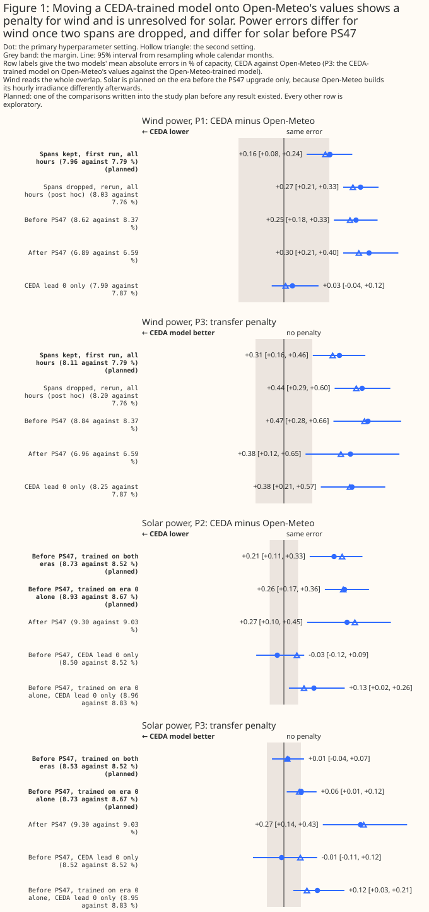
Every difference on the page is CEDA's error minus Open-Meteo's, so a positive number means CEDA's is larger. Each bracket holds a 95% interval from resampling whole calendar months and one of three fitting seeds (the table below defines a fitting seed). The plan fixed three contrasts, P1 to P3 in the table below, before any result existed. A contrast is the difference between two XGBoost models' errors. Every other comparison is exploratory. The table defines the terms the page uses from here on.
| Term | Meaning |
|---|---|
| CEDA archive, Open-Meteo archive | Two copies of UKV's output, a 2 km weather model of the United Kingdom. CEDA's holds the runs that start at 00, 06, 12, and 18 UTC (Coordinated Universal Time). Open-Meteo's serves each hour's freshest analysis, the weather model's estimate of the weather at the start of a run |
| Lead | Hours since a run of the weather model started. CEDA's values for an hour come from the latest run, so their lead is 0 to 5 hours. Open-Meteo's are always lead 0 |
| XGBoost model | A machine-learning model (gradient-boosted decision trees) trained for each wind or solar farm to predict its measured power from weather and calendar inputs |
| Arm | One XGBoost model set-up being compared, such as the XGBoost models trained and scored on CEDA's values |
| Plan | The study's written plan, which fixed the contrasts, the margins, and the reading rules before any power result existed. Its history is in pull request #1053 |
| Fitting seed | The random number that starts an XGBoost training run. Every arm is fitted with three seeds, so an interval includes the spread the seed alone causes |
| Fold | A block of whole calendar months held out of training. Each hour is forecast by an XGBoost model trained on the other folds, so every error is measured on months that XGBoost model never trained on |
| Spans | The UTC days 2024-11-07 to 2024-11-30 and 2025-01-16 to 2025-02-18, in which Open-Meteo's 10 m wind speed is about 6% above CEDA's instead of about 3% below. Every wind arm drops the spans |
| Points of capacity | Mean absolute error as a percentage of each farm's capacity, so 0.27 points on a 100 MW farm is 0.27 MW |
| Margin | The smallest difference the study counted as clear, fixed before any result: 0.16 points for wind and 0.06 for solar |
| P1 (planned) | Wind power: the XGBoost model given CEDA's 10 m wind minus the model given Open-Meteo's, each trained and scored on its own archive |
| P2 (planned) | Solar power: the same contrast for global irradiance and temperature, read on era 0 |
| P3 (planned) | Transfer penalty: the XGBoost model trained on CEDA's values and scored on Open-Meteo's values, minus the model trained and scored on Open-Meteo's. Only a positive penalty counts |
| Era 0, era 1 | Before and after the Met Office's UKV upgrade of 21 January 2026 (PS47). Era 0 is 2024-09 to 2025-12 and era 1 is 2026-02 to 2026-08 |
| Primary, second setting | Two fixed, untuned choices of the XGBoost model's tree depth, learning rate, and number of boosting rounds (the number of trees). Two settings guard against a verdict that holds for one choice alone, so a verdict stands only if both settings agree |
| Differ, interchangeable, unresolved | The three readings of P1 and P2. "Differ": the interval excludes zero and the estimate lies beyond the margin. "Interchangeable": the whole interval lies inside the margin. Any other result is "unresolved" |
| Penalty, no penalty, unresolved | The three readings of P3, read one-sided: a penalty needs the interval above zero and the estimate beyond the margin, and no penalty needs the upper bound below the margin |
| Planned, post hoc, exploratory | Planned comparisons were written into the study plan before any result existed. A post hoc decision was made after a result existed, such as dropping the two wind spans after the first fit. Every other comparison, including every comparison labelled exploratory, is one of many. About one in 20 comparisons with no real effect reaches statistical significance at the 5% level by chance |
How this page was made. The research question came from a human. Everything else — the code behind every result, the analysis, the figures, and the text — was written by Claude, Anthropic's AI model (for this page, Claude Opus 5, Claude Opus 5.5, Claude Sonnet 5, and Claude Sonnet 5.5). Separate Claude reviewers, each starting without the author's context, then checked the work adversarially: two reviews of the plan, one of the code, three of the science, one of the diff, and a prose review in four pass groups. Four isolated Claude readers, two on an earlier draft and two on this version, read the page as first-time readers.
Key findings
- The mean absolute difference in the two archives' temperature is 0.098 K at lead 0 and 0.557 K at lead 5, and the 10 m wind speed, wind direction, and irradiance also agree most closely at lead 0 and drift apart with CEDA's lead. Even at lead 0, Open-Meteo's wind speed is closest to the nearest CEDA cell's at only 27% of hours, so the two archives are not one analysis sampled at one cell (the model-free comparison).
- Open-Meteo's 10 m wind speed is about 3% below CEDA's at lead 0, and in two spans (2024-11-07 to 2024-11-30 and 2025-01-16 to 2025-02-18) it is about 6% above, so every wind arm drops the spans and the three months they empty (the step in the served wind).
- Open-Meteo builds its hourly irradiance from a snapshot with a zenith-angle scaling that CEDA's raw snapshot lacks, and the scaling matches before the 2026 upgrade but not after it, so the solar contrasts are planned on era 0 only (the irradiance construction).
- Wind power (P1): CEDA's error is larger by +0.270 points [+0.209, +0.333] once the two spans are dropped, a post hoc data decision. The planned scope kept the spans, and the first run read +0.162 [+0.080, +0.241], which is unresolved because the second setting disagrees. At lead 0 the gap is +0.030 [-0.043, +0.122] after the drop, which lies inside the 0.16-point margin, and -0.051 [-0.166, +0.055] in the first run, which does not and so reads "unresolved". Most of the gap over all hours is CEDA's leads 1 to 5 against Open-Meteo's lead-0 analysis (wind P1).
- Solar power (P2, era 0): CEDA's error is larger by +0.212 points [+0.109, +0.332], and at lead 0 the two fits disagree: -0.028 [-0.117, +0.086] when trained on both eras and +0.127 [+0.021, +0.257] when trained on era 0 alone. As for wind, the gap over all hours sets CEDA's leads 1 to 5 against Open-Meteo's lead-0 analysis (solar P2).
- Wind transfer penalty (P3): +0.441 points [+0.286, +0.600], and +0.313 [+0.163, +0.459] in the first run that kept the spans. The penalty is a level bias of about 2.4 points of capacity that the speed offset mostly explains, and rescaling Open-Meteo's speed leaves +0.142 [+0.066, +0.217] (the transfer penalty).
- Solar transfer penalty (P3): unresolved, with a largest upper bound of +0.125 points. Three of the four readings are unresolved on their own, and the solar result is treated as a penalty only by the plan's default rule for an unresolved result. The study measured no solar penalty (solar P3).
- The GPU-against-CPU refit sets the noise floor at about 0.05 points, and the shuffled-weather pair is not a clean null, a comparison that should show no difference: the shuffled CEDA arm minus the shuffled Open-Meteo arm reads -0.249 points [-0.522, +0.021] for wind, so the control does not size the noise of the pipeline (controls and noise).
- By the plan's rule the training-history reading is "do not mix the two archives" for wind and, by default, for solar, within this study's scope and with the licence left to the maintainer (discussion). The Open-Meteo history that rule recommends contains the two dropped spans. The study did not measure what CEDA's extra history of about 5 years would add.
Introduction
The weather-driven forecasts of wind and solar power in Flexpectation, this project, learn from a history of past weather, and UKV is one weather product that history can read. The Met Office runs UKV every few hours. Two archives of its output are available to the project. CEDA's archive reaches back to September 2019, which covers the whole record of the network operator's power data. Open-Meteo's archive serves the freshest analysis for each hour and starts its own UKV downloader on 12 August 2024. The CEDA download notes record that CEDA's archive differs statistically from the live feed. The earlier CEDA-against-ERA5 study used CEDA's archive alone. That study compared CEDA's UKV with ERA5, an estimate of past weather from the European Centre for Medium-Range Weather Forecasts. This study measures how different the two archives are, in temperature, wind, and irradiance, and in the power forecasts that the project cares about.
| CEDA archive | Open-Meteo archive | |
|---|---|---|
| Source | The Met Office's UKV files at CEDA | Open-Meteo's mirror of UKV |
| Grid | 2 km, read at the cell nearest each farm | 2 km, served for each farm's coordinates |
| Runs and leads | 6-hourly runs, read at leads 0 to 5 hours | The freshest analysis for each hour (lead 0) |
| History used here | 2019-09 onward, 23 whole months overlap Open-Meteo | 2024-08-12 onward (earlier values are a backfill from an unnamed source) |
| Wind speed unit | m/s | km/h, converted here to m/s |
| Irradiance | One downward shortwave field, an instantaneous snapshot | An hourly value built from the snapshot at the hour's end |
| Licence | Creative Commons Attribution-NonCommercial-ShareAlike 4.0 | Open-Meteo's terms |
This study compares CEDA's archive with Open-Meteo's UKV and not with the Met Office's own live feed. An earlier check of Open-Meteo's irradiance against the Met Office's files, for hours since 12 August 2024, found Open-Meteo's irradiance within 0.55 W m⁻² of the Met Office's files. The project has not checked Open-Meteo's wind and temperature against those files. A separate pilot of the live feed is in progress, and its result may differ from this page's. The page promises no further study.
Data and methods
The study compares the two archives at the project's metered generators, in two ways: directly, and through the power forecasts that an XGBoost model makes. The metered generators are three wind farms, labelled W1 to W3, and six solar farms, labelled A to F. Both sets sit in one box in Lincolnshire. The labels come from a fixed permutation, and the page gives no farm's name, identifier, or coordinates.
The study's months are 2024-09 to 2025-12 (era 0, 16 months) and 2026-02 to 2026-08 (era 1, 7 months). Two months, 2024-08 and 2026-09, hold fewer than 25 days of Open-Meteo's data, and 2026-01 holds the upgrade of 21 January 2026, so the study drops those three months from every arm. The only change of UKV's physics inside the overlap that the study identified is that upgrade (PS47). The earlier upgrades, PS43 in December 2019, PS44 (whose date the project could not find), and PS45 in May 2022, precede Open-Meteo's UKV, so the study cannot test those upgrades. A move to new computers in May 2025 (PS46) lies inside era 0. The model-free tables read before and after PS46 without attributing a difference to PS46.
The rows are decided by the target and by availability, never by either archive's value, with one exception that the next paragraph states. An hour stays only if the farm's power exists and both archives hold every column an arm reads. An hour whose latest CEDA run is missing or partial is dropped and never filled from an older run, because filling from an older run would change the hour's lead. The wind rows drop every hour that holds an exactly zero half-hour, and the solar rows drop the commissioning ramp, as the CEDA-against-ERA5 study did. The solar rows also carry that study's export-cap flag, which excludes the hours the network operator curtailed from training and still scores those hours. Every arm drops the 94 hours from 2024-11-09 to 2024-11-13 that Open-Meteo's earlier extract lacks, and the 26 hours with a null wind direction.
The exception is two spans in which Open-Meteo's 10 m wind speed is built differently, which every
wind arm drops, and the plan did not make that drop. The plan's scope for wind was all rows, and
the first fit kept the spans. The first fit found that Open-Meteo's speed against CEDA's at lead 0
reads about 0.97 in most months and higher in three of them. The lineage check (committed as
ukv_ceda_vs_openmeteo_wind_steps.py) found two spans with sharp edges, the UTC days 2024-11-07 to
2024-11-30 and 2025-01-16 to 2025-02-18. The edges were set from the served series, from the ratio
of Open-Meteo's speed to CEDA's and not from any power result, at the resolution of whole UTC days.
A few hours at each edge in which the series did not change are dropped too. Every wind arm drops
whole any month that loses more than a quarter of its rows to the spans: 2024-11, 2025-01, and
2025-02 lose 84%, 52%, and 65%. The drop is a post hoc data decision, made after the first fit. The
page reports both runs for the wind contrasts. The wind rows fall to 40,287 farm-hours, which is 13
months of era 0 and 7 of era 1. The solar rows keep all 23 months, because none of the solar inputs
steps in the spans.
Open-Meteo's values are converted to match CEDA's, and a guard checks each conversion at lead 0, where both archives are the same UKV analysis.
- Wind speed is divided by 3.6, because Open-Meteo serves km/h. The guard stops the build if the median ratio of the two archives' speeds leaves 0.9 to 1.1, and a test shows that a factor of 3.6 fails the guard.
- Temperature is the mean of the instants at the two ends of each hour, for both archives, because each hour of solar power ends at the time that labels the hour.
- Irradiance needs more care. Open-Meteo's hourly value is UKV's snapshot at the hour's end multiplied by the ratio of the hour's mean cosine of the sun's zenith angle to the cosine at the hour's end. The study applies the same ratio to CEDA's snapshot, because CEDA's raw snapshot reads 36% high at 06 UTC and 23% low at 18 UTC against Open-Meteo's value. The guard requires the median ratio of CEDA's rebuilt value to Open-Meteo's to stay within 0.97 to 1.03 at every hour of day in era 0.
Every wind farm and every solar farm gets one XGBoost model per archive, trained on that farm's own history. The wind arms read the archive's 10 m wind speed and the sine and cosine of its 10 m wind direction, plus the hour of day, the day of the year, and the era (6 columns each). CEDA has no 100 m wind, so the matched 10 m pair is the only wind pair both archives can serve. The solar arms read the archive's global irradiance and temperature, the sun's zenith angle and azimuth, the extraterrestrial flux, the hour of day, the day of the year, and the era (8 columns each). Beam and diffuse irradiance cannot enter, because CEDA holds one shortwave field. XGBoost's column subsampling is off, so a pair of arms with equal columns cannot win on a column count. Each hour is predicted by an XGBoost model that did not train on that hour's fold, so every error is out of fold. The folds are blocks of whole calendar months cut inside each era and rotated so that every calendar month that occurs in two years has a training row. Each arm is fitted at both settings with three seeds on a graphics processing unit (GPU), and one wind arm is refitted on the central processing unit (CPU) to measure the difference between the two processors.
The transfer scoring uses one fitted XGBoost model to score several sets of input values, so that the transfer penalty needs no second fit. The model trained on CEDA's values predicts each held-out fold from CEDA's values, from Open-Meteo's values under CEDA's column names, and from a few partial swaps, in which only some of CEDA's columns are replaced by Open-Meteo's. The CEDA-trained model's predictions on CEDA's own values are the arm P1 reads, and its predictions on Open-Meteo's values are the transfer arm P3 reads.
The solar contrasts are planned on era 0, and each is fitted twice. The solar planned contrasts (P2 and P3 for solar) are read on the 16 months of era 0, because Open-Meteo builds its hourly irradiance differently after the upgrade (see the irradiance section below). One fit trains on the rows of both eras and is scored on era 0. The other fit trains on era 0 alone, so that the construction that differs after the upgrade cannot reach the fit. A solar verdict stands only if all four readings agree (two fits at two settings), and otherwise the verdict is "unresolved". The wind contrasts read all 20 months left after the drop of the spans. The restriction of the solar contrasts to era 0 was decided from the irradiance guard before any power fit. The fit trained on era 0 alone adds 24 fit-sets, each fit-set being one arm at one setting at one farm, so the study has 78 fit-sets in all, plus 3 on the CPU.
The margins are those of the CEDA-against-ERA5 study, and this overlap may be too short to resolve differences as small as the margins. The margins, 0.16 points for wind and 0.06 for solar, were fixed before any result, and that study took the margins from the half-widths of earlier pages' intervals. The plan stated that "interchangeable" for P2 was probably out of reach, because the half-widths of those earlier intervals were 0.17 to 0.24 points and the solar margin is 0.06. For solar P3 the plan recorded an interval half-width of 0.057, below the margin, so "no penalty" was reachable. Each interval resamples whole calendar months, paired across arms, and one of the three fitting seeds, 2,000 times. An interval covers month-to-month weather and the seed, and not differences between farms.
Results
The XGBoost models track measured power at every farm
Before any contrast, Figures 2 and 3 show that the XGBoost models forecast measured power sensibly. Each panel draws the out-of-fold prediction from the CEDA-trained and the Open-Meteo-trained model against the measured power, in three weeks chosen by a stated rule: the week of highest mean output, the week of the largest hour-to-hour spread, and the week of lowest mean output. The wind weeks are in September 2025 (the first two) and October 2025, and the solar weeks are in March 2025 (the first two) and August 2025. A reader might not expect those months, because the rule ranks weeks by the mean share of capacity over hours with data, so gaps, curtailment, and commissioning drops move the ranking. The mean absolute error of the models on the planned scope is about 7.8% to 8.0% of capacity for wind and about 8.5% to 9.1% for solar (Figure 11). An XGBoost model given weather shuffled within each month and hour has an error of 19.357% for wind and 14.236% for solar on era 0, so the models use the weather they are given.
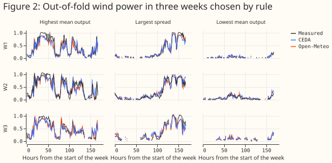
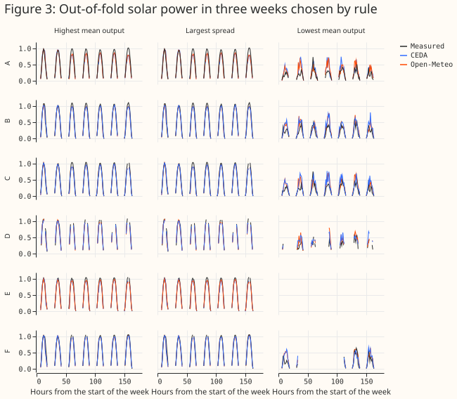
The archives agree closely at lead 0 and drift apart with CEDA's lead
The model-free comparison, which differences the two archives' values at the nine generator sites with no forecast, finds the closest agreement at lead 0. At lead 0, where both archives are the same analysis, the mean absolute difference in air temperature is 0.098 K [0.088, 0.109] and the correlation is 0.9997. The difference grows with CEDA's lead to 0.557 K [0.502, 0.611] at lead 5 (correlation 0.9919). The 10 m wind speed follows the same pattern: 0.190 m/s [0.185, 0.195] at lead 0 and 0.519 m/s [0.499, 0.540] at lead 5, with a correlation of 0.9944 at lead 0. The 10 m wind direction differs by 2.580 degrees [2.393, 2.752] at lead 0 and 8.783 degrees [7.972, 9.668] at lead 5, in hours when CEDA's speed exceeds 2 m/s. At lead 0 CEDA's direction is 1.898 degrees [1.754, 2.044] lower than Open-Meteo's, a small rotation of about 1.8 degrees in era 0 [1.612, 1.955] and 2.2 in era 1 [2.119, 2.279]. Figure 4 draws the four variables by lead. The intervals resample whole months, and every comparison in this section is exploratory.
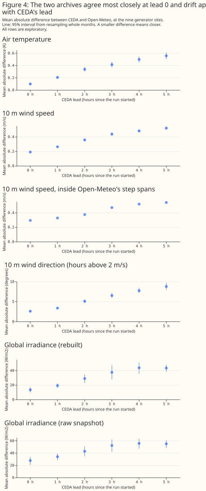
Even at lead 0, Open-Meteo does not serve the nearest CEDA cell's value. The nearest of the nine CEDA cells around a site has the value closest to Open-Meteo's at only 27% of lead-0 hours for wind speed and 47% for temperature, against 11% by chance. So even at lead 0 the two archives are not one analysis sampled at one cell. The archives differ in how their values are interpolated or in which grid they read.
Month by month, the irradiance difference rises after the 2026 upgrade. Figure 5 draws the monthly mean absolute difference with the 2026 upgrade marked. The other three variables show no step that stands out from their month-to-month swings, which is a reading of the chart and not a test. The before-and-after comparisons at May 2025 (PS46) are labelled as not an isolated PS46 effect, because the two comparisons also differ in the months they hold.
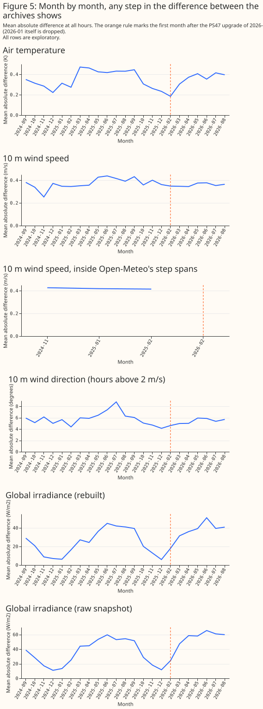
Open-Meteo's 10 m wind speed is about 3% below CEDA's, and steps up in two spans
At lead 0, Open-Meteo's 10 m wind speed averages 4.052 m/s against CEDA's 4.196 m/s, a difference of +0.144 m/s [+0.137, +0.152] in CEDA minus Open-Meteo. The median ratio of Open-Meteo's speed to CEDA's is 0.968 outside the two spans described below. The monthly median stays between 0.960 and 0.974 in each of the 20 months outside the spans, so the offset is a level difference between the archives and not noise. The offset reappears in the power forecasts as the wind transfer penalty.
In two spans with sharp edges the ratio rises to 1.063, and the step is in Open-Meteo's served
series. The spans are the UTC days 2024-11-07 to 2024-11-30 and 2025-01-16 to 2025-02-18. In the
spans the median ratio of Open-Meteo's speed to CEDA's is 1.063 against 0.968 outside, on 1,944 and
22,761 site-hours at lead 0. CEDA's speed against ERA5's stays steady across the months while
Open-Meteo's against ERA5's rises in the spans (2024-11: 0.774 for Open-Meteo against 0.754 for
CEDA), which puts the step in Open-Meteo's archive. The ratio of Open-Meteo's 100 m speed to its 10
m speed falls from 1.945 to 1.789 in the spans, so the 10 m speed rose relative to the 100 m speed.
Three other quantities do not step: Open-Meteo's temperature offset (CEDA minus Open-Meteo, -0.009 K
inside the spans against -0.022 K outside), wind-direction difference (-1.0 against -2.0 degrees,
CEDA minus Open-Meteo), and irradiance ratio (0.999 against 1.000). The combined.parquet file that
the study reads equals the site_points/ extract that the other studies read in all 3,894 rows they
share inside the spans, so the step is in what Open-Meteo served and not in this study's file. The
cause of the step in Open-Meteo's 10 m speed is unknown.
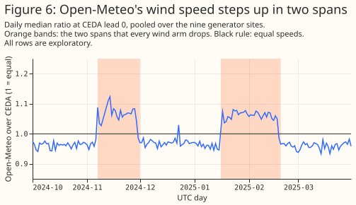
The wind P1 verdict depends on dropping the spans, and the wind P3 verdict does not. The first fit, which kept the spans, is the planned scope, and the page reports it beside the rerun. The first run read wind P1 as +0.162 [+0.080, +0.241] at the primary setting and +0.146 [+0.073, +0.216] at the second, which is "unresolved" because only the primary setting reads "differ". The study dropped the spans after the first fit and refitted every arm. The rerun reads +0.270 [+0.209, +0.333] and +0.243 [+0.192, +0.294], "differ" at both settings. The wind P1 verdict therefore depends on a data decision made after the planned fit. The wind P3 verdict does not: the first run read +0.313 [+0.163, +0.459] and +0.275 [+0.135, +0.422], a penalty at both settings, and the rerun's penalty is larger. Inside the spans the sign of the speed difference reverses (CEDA minus Open-Meteo is -0.251 m/s at lead 0), so keeping the spans blurred the transfer penalty. The step is a risk to every wind result on the page. The Limitations section states that risk.
Open-Meteo builds its hourly irradiance differently after the 2026 upgrade and in low sun
CEDA's raw snapshot and Open-Meteo's hourly irradiance differ by up to 36% by hour of day, and rebuilding CEDA's snapshot as Open-Meteo builds its value removes the difference before PS47. At lead 0 in era 0, the median ratio of CEDA's rebuilt irradiance to Open-Meteo's is 1.005 at 06 UTC, 1.000 at 12 UTC, and 0.996 at 18 UTC. The raw snapshot's ratios are 1.355, 1.011, and 0.774. After the upgrade the rebuilt ratios are 1.111, 1.000, and 0.864 (the raw ratios are 1.517, 1.010, and 0.663), so Open-Meteo builds its hourly value some other way. The mean absolute difference at lead 0 is 8.005 W m⁻² [6.416, 9.231] in era 0 and 22.939 W m⁻² [19.970, 25.770] in era 1. For this reason the solar contrasts are planned on era 0 and the solar comparisons on era 1 are exploratory, with the note "irradiance construction differs after PS47 (ratio 1.11 at 06 UTC, 0.86 at 18 UTC)".
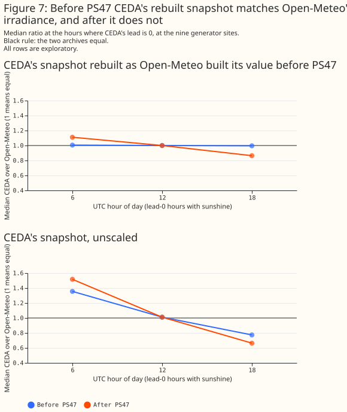
The rebuild also fails in low sun in both eras, and the mismatch after PS47 is not confined to low sun. By the sun's elevation, the median rebuilt ratio in era 0 is 0.008 up to 2 degrees, 0.681 from 2 to 5 degrees, 0.975 from 5 to 10 degrees, and 1.000 above 10 degrees. In era 1 the median ratio is 1.003, 1.004, and 1.000 for the three bins above 10 degrees, but the 10th to 90th percentile of the ratio is 0.823 to 1.210 from 10 to 20 degrees, against 0.941 to 1.058 in era 0. Restricting the solar contrasts to hours with the sun above 5 degrees barely moves them (P2 on era 0 reads +0.227 [+0.115, +0.365] against +0.212 [+0.109, +0.332]).
Wind power: CEDA is 0.270 points worse once the two spans are dropped
Over all hours and with the two spans dropped, the XGBoost model given CEDA's 10 m wind has a mean absolute error larger than the model given Open-Meteo's by 0.270 points of capacity [+0.209, +0.333] at the primary setting and 0.243 [+0.192, +0.294] at the second (P1). Both readings are "differ": the intervals exclude zero and the estimates exceed the 0.16-point margin. The planned scope kept the spans, and there the first run read +0.162 [+0.080, +0.241] and +0.146 [+0.073, +0.216], which is "unresolved". Dropping the spans is the post hoc data decision described under the methods, so the "differ" reading is not a planned result. The two models' own errors are 8.032% [7.074, 9.083] for CEDA and 7.763% [6.805, 8.823] for Open-Meteo at the primary setting.
The gap is mostly CEDA's lead, because the gap grows from +0.030 at lead 0 to +0.536 at lead 5. Figure 8 draws the contrasts by CEDA lead. Every comparison by lead is an exploratory subset of the fit. At lead 0 the gap is +0.030 [-0.043, +0.122] at the primary setting and +0.006 [-0.069, +0.085] at the second, and both intervals lie inside the margin. That reading is "interchangeable" only on the rerun's rows, after the post hoc drop of the spans. The first run read -0.051 [-0.166, +0.055] and -0.069 [-0.166, +0.025], which is "unresolved" at both settings. The gap is +0.135, +0.162, +0.318, and +0.437 at leads 1 to 4 and +0.536 [+0.383, +0.682] at lead 5. A CEDA-trained XGBoost model is trained on all leads and so scores the lead-0 subset with an XGBoost model that also learned from leads 1 to 5, which the page notes under Limitations. A lead of 0 hours is the case in which both archives are the same analysis, so P1 over all hours measures CEDA's 6-hourly archive against Open-Meteo's hourly analysis as much as it measures a difference between the two products.
A row's lead is its UTC hour modulo 6, so lead and time of day cannot be separated. After the 12 UTC run the gap at the primary setting is +0.270 [-0.052, +0.584] at 13 UTC, +0.509 [+0.176, +0.909] at 14 UTC, +0.749 [+0.318, +1.198] at 15 UTC, +1.108 [+0.709, +1.534] at 16 UTC, and +1.124 [+0.799, +1.483] at 17 UTC, and the other three runs give smaller gaps (exploratory, from the saved losses of the rerun).
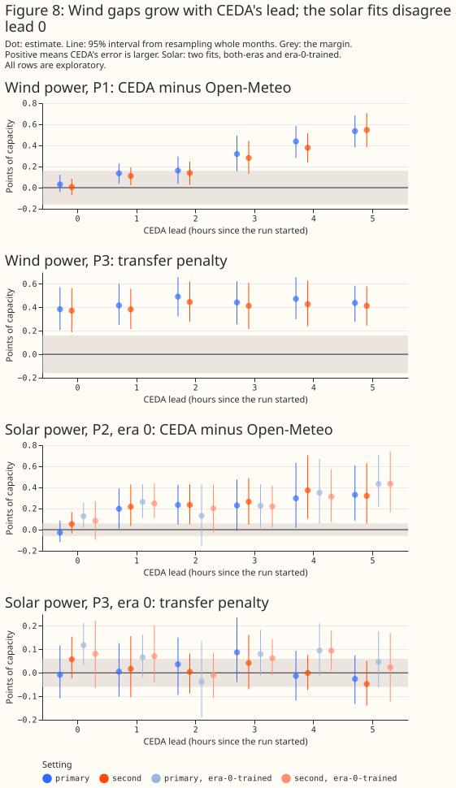
Solar power: CEDA is 0.212 points worse before the 2026 upgrade
On era 0, the XGBoost model given CEDA's irradiance and temperature has a larger error than the model given Open-Meteo's by 0.212 points [+0.109, +0.332] at the primary setting and 0.246 [+0.127, +0.393] at the second (P2, planned), and the fit trained on era 0 alone agrees (+0.256 [+0.173, +0.360] and +0.251 [+0.155, +0.360]). The verdict is "differ", because all four readings agree. At CEDA lead 0 the two fits disagree. The fit trained on both eras reads -0.028 [-0.117, +0.086], which is "unresolved", and the fit trained on era 0 alone reads +0.127 [+0.021, +0.257], which is "differ" (its second setting reads +0.085 [-0.098, +0.270]). The gap grows to +0.330 [+0.086, +0.609] at lead 5 in the fit trained on both eras (the solar transfer section gives a probable mechanism). On era 1, the exploratory comparison reads +0.267 [+0.098, +0.452] with the note about Open-Meteo's irradiance construction.
An XGBoost model trained on CEDA's wind loses 0.441 points on Open-Meteo's wind, mostly because Open-Meteo's speeds are lower
When the XGBoost model trained on CEDA's wind is given Open-Meteo's wind and scored on the same hours, its error is larger than the Open-Meteo-trained model's by 0.441 points [+0.286, +0.600] at the primary setting and 0.408 [+0.242, +0.574] at the second (P3, planned). Both readings are "penalty". The penalty is +0.474 [+0.279, +0.661] in era 0 and +0.375 [+0.122, +0.651] in era 1, and +0.648 [+0.352, +0.881] from October to March against +0.298 [+0.145, +0.469] from April to September (all exploratory). At lead 0 the penalty is +0.384 [+0.208, +0.571], so unlike P1 the penalty does not shrink at lead 0. The penalty is +0.313 [+0.163, +0.459] in the first run that kept the spans, and +0.250 [+0.086, +0.416] at lead 0 in that run.
The penalty is a level bias. Figure 9 draws each wind arm's mean signed error, which is the prediction minus the measured power as a share of capacity. The CEDA-trained model on CEDA's wind has a mean signed error of -0.974 points, the Open-Meteo-trained model on Open-Meteo's wind has -0.914, and the CEDA-trained model on Open-Meteo's wind has -3.327. The CEDA-trained model under-predicts by about 2.4 points more when it is given speeds that are 3% lower, which is what a lower input speed produces on the steep part of a power curve. Swapping only the direction, which differs by about 2 degrees, adds +0.023 points [+0.009, +0.037], so the direction carries almost none of the penalty.
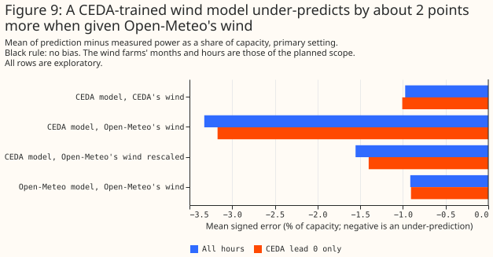
Rescaling Open-Meteo's speed to CEDA's level removes most of the penalty and leaves +0.142 points [+0.066, +0.217] (exploratory). The calibrator test scores the CEDA-trained model on Open-Meteo's speed multiplied by each site's median ratio of CEDA's to Open-Meteo's speed at lead-0 instants, learned on the training folds only. The penalty falls from +0.441 to +0.142, which is still statistically significant at the 5% level. The mean signed error rises from -3.327 to -1.555 points. Under the plan's reading rule that residual is "unresolved" and not "no penalty": the estimate is below the 0.16-point margin and its upper bound is above it. A rescale therefore absorbs most of the level bias and not all of the penalty. The study tested no other calibrator and no calibrator for solar.
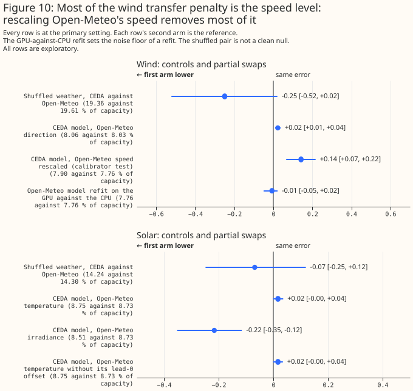
The solar transfer penalty is unresolved
For solar power on era 0, the transfer penalty reads +0.014 points [-0.042, +0.071] at the primary setting and +0.012 [-0.047, +0.067] at the second in the fit trained on both eras, so P3 is "unresolved" for solar. The fit trained on era 0 alone reads +0.061 [+0.010, +0.115] at the primary setting, which is a penalty by the rule, and +0.054 [-0.012, +0.125] at the second, which is unresolved. A verdict stands only if all four readings agree, so the verdict is "unresolved". The largest upper bound across the four readings is +0.125 points, against absolute errors of 8.5% to 8.9%. By the plan's rule an unresolved reading is treated as a penalty, and the page states that the solar penalty is a default and not a measured penalty.
The extra era-1 rows did not hurt either solar model on era 0, and at lead 0 the era-0 fit's penalty does not come from the input values. On era 0, the Open-Meteo-trained model scores 8.52% when trained on both eras and 8.67% when trained on era 0 alone, and the CEDA-trained model scored on Open-Meteo's inputs scores 8.53% and 8.73%, so the extra era-1 rows did not hurt either model on era 0. At CEDA lead 0 the era-0-trained CEDA model scores 8.96% on CEDA's inputs and 8.95% on Open-Meteo's, so at lead 0 its penalty does not come from the input values. The lead-0 penalty probably comes from what training on CEDA's leads 1 to 5 taught the model, and the lead-0 penalty is part of the transfer penalty and not a separate effect (exploratory). The page did not run the check that would test that explanation, which adds the lead as an input to the XGBoost model.
Irradiance, not temperature, carries the difference between the two archives' solar inputs. Scored on Open-Meteo's irradiance alone the CEDA-trained model's error is -0.216 points [-0.352, -0.115] below its error on CEDA's, and scored on Open-Meteo's temperature alone it is +0.017 [-0.001, +0.036] above, so irradiance and not temperature carries the difference. Open-Meteo's lead-0 irradiance replaces CEDA's irradiance at leads 1 to 5, so a lower error is the expected sign. All solar results rest on the two fits. The all-months fit gives a penalty of +0.103 [+0.027, +0.190] with the note about the irradiance construction after PS47, which supports the default rule.
Controls: a refit on the CPU and XGBoost models given shuffled weather
The GPU-against-CPU refit sets the noise floor at about ±0.05 points, and the shuffled-weather pair is not a clean null. The refit of the Open-Meteo wind arm on the CPU reads -0.007 [-0.050, +0.022] against the GPU fit. Each archive's weather columns were also shuffled within a site, a month, and an hour of day, under its own permutation. The shuffled CEDA arm minus the shuffled Open-Meteo arm reads -0.249 points [-0.522, +0.021] for wind and -0.068 [-0.248, +0.119] for solar on era 0, neither statistically significant. The shuffled arms' errors are 19.357% and 19.606% for wind and 14.236% and 14.304% for solar on era 0, far above the real arms' 7.7% to 8.9%. The shuffle keeps each archive's monthly-hourly distribution, including Open-Meteo's lower speed level and CEDA's lead-dependent spread, so the two shuffled arms are not equally informative by construction. The shuffled-weather control does not size the noise of the pipeline. Figure 11 draws every arm's absolute error and its interval.
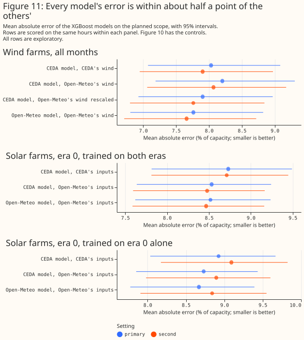
The second setting, the eras, the seasons, and the farms leave the readings as they are
The second hyperparameter setting gives the same verdict as the primary setting for wind P1, wind P3, and solar P2. Wind P1 reads "differ" at both settings (+0.270 and +0.243), and wind P3 reads "penalty" at both (+0.441 and +0.408). Solar P3 is unresolved because its four readings disagree.
The exploratory splits by era, season, and farm agree in sign. Wind P1 is +0.254 [+0.176, +0.330] in era 0 and +0.300 [+0.209, +0.403] in era 1, +0.315 [+0.209, +0.414] from October to March and +0.239 [+0.176, +0.310] from April to September, and +0.262 [+0.172, +0.342], +0.242 [+0.128, +0.351], and +0.308 [+0.169, +0.444] at W1, W2, and W3. Wind P3 at the three farms reads +0.392 [+0.218, +0.565], +0.514 [+0.331, +0.693], and +0.410 [+0.049, +0.746]. The comparison "without 2025-01" repeats the planned comparison for wind, because the wind rows hold no January 2025. For solar P2 that comparison reads +0.234 [+0.141, +0.335] over all 23 months and both eras, with the note about the irradiance construction after PS47, which is not the era-0 planned scope. Every one of these comparisons is one of many exploratory comparisons.
Discussion: what to use
This section reads the evidence as the plan's rules fix it, and it commits the project to nothing. The rules came before any result: a P3 reading of "penalty" or "unresolved" means do not mix the two archives, and "no penalty" would have allowed an XGBoost model trained on CEDA's history to be given Open-Meteo's values.
- Wind, training on CEDA's history and serving Open-Meteo's UKV: the rule says train on Open-Meteo's history only (from August 2024) for wind, because P3 is a penalty at both settings (+0.441 and +0.408). A calibrator is an alternative only where a calibrator test shows that the calibrator absorbs the penalty. A speed rescale left +0.142 [+0.066, +0.217], which reads "unresolved" under the plan's rule, and the decision is unchanged. The study holds both XGBoost models to the same months of training rows, so the study does not weigh CEDA's extra history of about 5 years against the mismatch. What would change the wind reading: a test of CEDA's longer history against Open-Meteo's, a longer overlap, a calibrator that removes the remaining penalty, or a reading of Open-Meteo's wind against the Met Office's files that explains the 3% offset and the two spans. The Open-Meteo history that the rule recommends contains the two spans this study dropped (2024-11-07 to 2024-11-30 and 2025-01-16 to 2025-02-18), and the unnamed backfill before 12 August 2024. An XGBoost model trained on that history has to drop or correct the spans.
- Solar, the same question: the reading is "unresolved", so by the plan's default rule solar is treated like wind and the two archives are not mixed until a longer overlap exists. The study did not measure a solar penalty. The largest upper bound across its readings is +0.125 points, against absolute errors of 8.5% to 8.9%.
- Comparing the archives' own accuracy: P1 and P2 over all hours say that CEDA's 6-hourly archive, read at its latest run, gives a larger power error than Open-Meteo's hourly analysis. The lead-0 comparisons say that the wind gap is mostly the lead once the spans are dropped (+0.030 [-0.043, +0.122]). The solar fits disagree at lead 0 (-0.028 [-0.117, +0.086] and +0.127 [+0.021, +0.257]). The page does not say that either archive is the better product.
- The licence: CEDA's catalogue record gives the Creative Commons Attribution-NonCommercial- ShareAlike 4.0 licence, so whether the main work's use of CEDA's UKV as training history is non-commercial is a decision for the maintainer.
- The Met Office's live feed: this study did not compare it with CEDA's archive, and a pilot of the feed is in progress, so the page makes no statement about the live feed.
Limitations
- The comparison is between CEDA's archive and Open-Meteo's UKV, a proxy for the live feed. Only Open-Meteo's irradiance has been checked against the Met Office's files. Open-Meteo's wind and temperature have not been checked, and the 3% speed offset and the two spans may come from Open-Meteo's processing and not from UKV. Interpolation from the native grid is one candidate for the offset, because the nearest CEDA cell matches Open-Meteo's value at only 27% of lead-0 hours.
- The two spans were found from the served series and dropped. The edges are whole UTC days, a few hours at each edge in which the series did not change are dropped, and the choice rests on Open-Meteo's ratio to CEDA's and not on a power result. The first run, which kept the spans and is the planned scope, read wind P1 as unresolved. The page cannot rule out that further spans exist at a smaller size.
- Leads beyond 5 hours are untested. A live service would feed forecasts at leads of hours to days. A lead-0 analysis is the least noisy input an XGBoost model could meet, so the transfer penalty probably understates the effect for solar. For wind the speed scale would carry over.
- The lead-0 comparisons are scoring subsets. The XGBoost models are trained on all leads, so the lead-0 comparisons do not show how an XGBoost model trained only on lead 0 would do.
- The overlap is 23 months, and the planned solar contrasts rest on 16. The era-1 comparisons rest on 7 months and have approximate intervals. The intervals cover month-to-month weather and the seed. The study covers three wind farms and six solar farms in one box in Lincolnshire.
- Open-Meteo's irradiance construction changes after PS47, and the rebuild fails in low sun in both eras. The solar results hold for the era before the upgrade only. The rebuild is unreliable below about 10 degrees of sun elevation, and excluding the low sun barely moves P2.
- The
effective_capacitytable behind every figure is the CEDA-against-ERA5 study's table, at Delta version 1, as that study's build stamp records. - Beam and diffuse irradiance, 100 m wind, and the Met Office's stations are not compared, and the study has no station check. Open-Meteo's UKV at the stations was not downloaded.
- About one exploratory comparison in 20 with no real effect reaches statistical significance at the 5% level by chance, and the report holds many exploratory comparisons over shared months. The page quotes an exploratory label only with its scope.
Scope
The study covers temperature, 10 m wind, and global horizontal irradiance at nine generators, over 23 months. The study does not cover other variables that the main forecast reads (such as pressure, dew point, and precipitation), other weather products, other regions, or forecasts at leads beyond 5 hours. The study does not compare the archives with measurements of the weather, and it does not say which archive is closer to what happened.
Data and code availability
CEDA's UKV archive is public to registered users under the Creative Commons
Attribution-NonCommercial-ShareAlike 4.0 licence, and Open-Meteo's historical-forecast archive is
public. The power data, the farm locations, and the frames and per-row losses are private. The
scores and charts on this page carry no UKV values. The code is in studies/past_weather/ and
packages/studies/ at the commit that merged this page. The XGBoost version is 3.4.1, the device is
an NVIDIA RTX A6000, and the two settings are those of the CEDA-against-ERA5 study. The source for
CEDA's data is Met Office (2016): NWP-UKV: Met Office UK Atmospheric High Resolution Model
data, Centre for Environmental
Data Analysis.
Reproducing the figures
Each script's output folder is write-once, so move an earlier output to a superseded/ subfolder of
data/studies/per_study/ukv_ceda_vs_openmeteo/ before a re-run. The build reads the
CEDA-against-ERA5 study's frames and Open-Meteo's previous-runs file, which
studies/weather_downloads/ fetches.
No command below regenerates the first run, which kept the two spans. The extra-reads script and
the headline figure read that run from superseded/first_run/. To rebuild it, check out the scripts
at commit 22c2faf6, run their build, compare, and fit steps, and move the folder's outputs to
superseded/first_run/ before running the commands below.
uv run python studies/past_weather/ukv_ceda_vs_openmeteo_build.py --check-only # must exit 0
uv run python studies/past_weather/ukv_ceda_vs_openmeteo_build.py
uv run python studies/past_weather/ukv_ceda_vs_openmeteo_compare.py
uv run python studies/past_weather/ukv_ceda_vs_openmeteo_wind_steps.py
uv run python studies/past_weather/ukv_ceda_vs_openmeteo_fit.py --verified --device cuda
uv run python studies/past_weather/ukv_ceda_vs_openmeteo_extra_reads.py
uv run python studies/past_weather/ukv_ceda_vs_openmeteo_charts.py
Then optimise each figure in docs/studies/assets/ukv_ceda_vs_openmeteo/ with
npx svgo@4 --multipass --precision=1 --final-newline. After a review, fit.py --report-only
rebuilds the intervals and the reports from the saved losses.